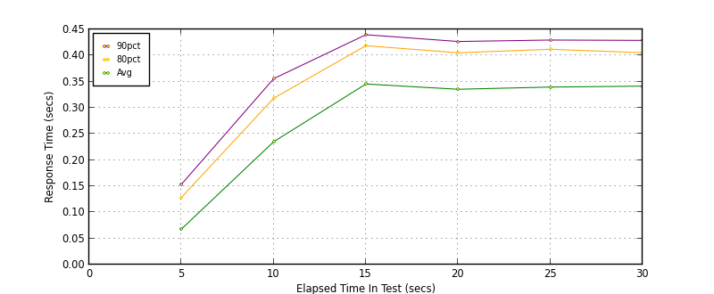
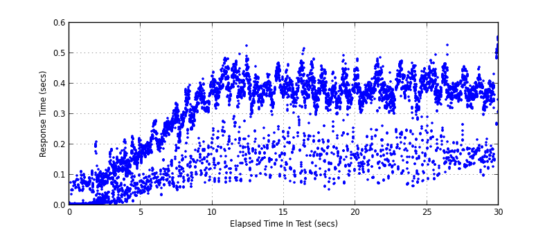
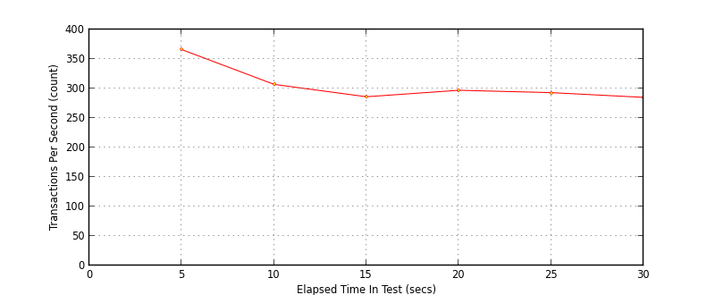
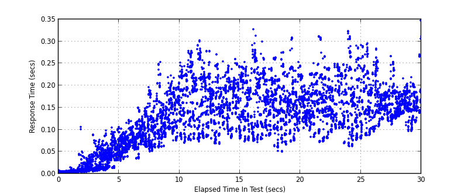
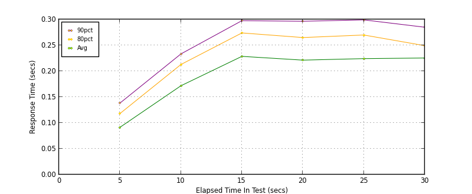
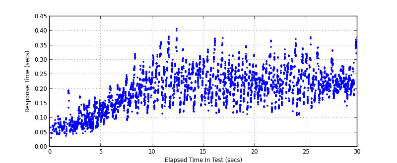
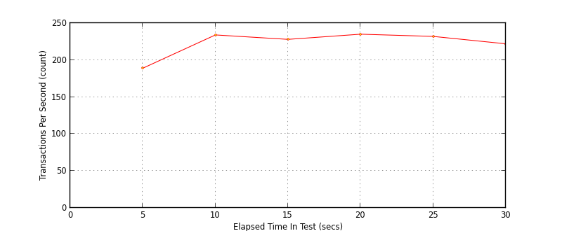

Performance Results Report
Summary
transactions: 9279
errors: 0
run time: 30 secs
rampup: 10 secs
test start: 2014-02-05 00:06:12
test finish: 2014-02-05 00:06:42
time-series interval: 5 secs
workload configuration:
| group name | threads | script name |
|---|
| user_group-1 | 10 | read_user.py |
| user_group-2 | 90 | readwrite_user.py |
All Transactions
Transaction Response Summary (secs)
| count | min | avg | 80pct | 90pct | 95pct | max | stdev |
|---|
| 9279 | 0.003 | 0.268 | 0.393 | 0.418 | 0.439 | 0.554 | 0.141 |
Interval Details (secs)
| interval | count | rate | min | avg | 80pct | 90pct | 95pct | max | stdev |
|---|
| 1 | 1831 | 366.20 | 0.003 | 0.068 | 0.129 | 0.154 | 0.178 | 0.228 | 0.061 |
| 2 | 1536 | 307.20 | 0.034 | 0.235 | 0.318 | 0.356 | 0.376 | 0.426 | 0.092 |
| 3 | 1433 | 286.60 | 0.076 | 0.346 | 0.419 | 0.440 | 0.453 | 0.525 | 0.100 |
| 4 | 1489 | 297.80 | 0.051 | 0.335 | 0.405 | 0.427 | 0.445 | 0.515 | 0.099 |
| 5 | 1465 | 293.00 | 0.063 | 0.340 | 0.412 | 0.430 | 0.447 | 0.487 | 0.098 |
| 6 | 1425 | 285.00 | 0.087 | 0.341 | 0.405 | 0.429 | 0.449 | 0.554 | 0.098 |
Graphs
Response Time: 5 sec time-series

Response Time: raw data (all points)

Throughput: 5 sec time-series

Custom Timer: get_tweets
Timer Summary (secs)
| count | min | avg | 80pct | 90pct | 95pct | max | stdev |
|---|
| 9179 | 0.003 | 0.124 | 0.185 | 0.216 | 0.236 | 0.348 | 0.071 |
Interval Details (secs)
| interval | count | rate | min | avg | 80pct | 90pct | 95pct | max | stdev |
|---|
| 1 | 1831 | 366.20 | 0.003 | 0.021 | 0.042 | 0.056 | 0.069 | 0.106 | 0.023 |
| 2 | 1536 | 307.20 | 0.030 | 0.104 | 0.141 | 0.169 | 0.188 | 0.253 | 0.042 |
| 3 | 1433 | 286.60 | 0.067 | 0.164 | 0.213 | 0.232 | 0.250 | 0.302 | 0.052 |
| 4 | 1489 | 297.80 | 0.050 | 0.159 | 0.212 | 0.233 | 0.244 | 0.327 | 0.054 |
| 5 | 1465 | 293.00 | 0.063 | 0.161 | 0.207 | 0.227 | 0.246 | 0.323 | 0.050 |
| 6 | 1425 | 285.00 | 0.083 | 0.162 | 0.186 | 0.206 | 0.238 | 0.348 | 0.038 |
Graphs
Response Time: 5 sec time-series

Response Time: raw data (all points)

Throughput: 5 sec time-series
Custom Timer: post_tweet
Timer Summary (secs)
| count | min | avg | 80pct | 90pct | 95pct | max | stdev |
|---|
| 6712 | 0.031 | 0.197 | 0.253 | 0.280 | 0.308 | 0.408 | 0.067 |
Interval Details (secs)
| interval | count | rate | min | avg | 80pct | 90pct | 95pct | max | stdev |
|---|
| 1 | 947 | 189.40 | 0.031 | 0.091 | 0.118 | 0.138 | 0.152 | 0.195 | 0.031 |
| 2 | 1173 | 234.60 | 0.076 | 0.172 | 0.213 | 0.233 | 0.257 | 0.321 | 0.046 |
| 3 | 1141 | 228.20 | 0.115 | 0.229 | 0.274 | 0.298 | 0.331 | 0.408 | 0.056 |
| 4 | 1175 | 235.00 | 0.113 | 0.221 | 0.265 | 0.296 | 0.310 | 0.374 | 0.053 |
| 5 | 1162 | 232.40 | 0.109 | 0.224 | 0.270 | 0.299 | 0.315 | 0.372 | 0.052 |
| 6 | 1114 | 222.80 | 0.133 | 0.225 | 0.249 | 0.285 | 0.319 | 0.378 | 0.044 |
Graphs
Response Time: 5 sec time-series

Response Time: raw data (all points)

Throughput: 5 sec time-series
